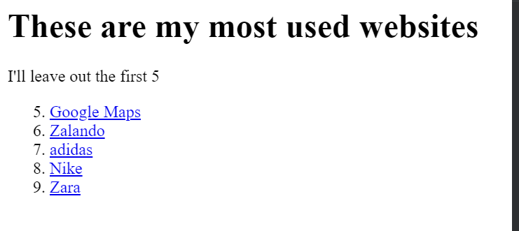

<!-- TODO 1: Create the HTML Boilerplate -->
<!DOCTYPE html>
<html lang="en"></html>
    <head>
        <meta charset="UTF-8">
        <title>Alba's website</title>
    </head>

    <body>

    </body>

    <!DOCTYPE html>
    <html lang="en">
    <head>
        <meta charset="UTF-8">
        <meta name="viewport" content="width=device-width, initial-scale=1.0">
        <title>Document</title>
    </head>
    <body>
        <h1>Welcome to my site</h1>
        <h2>Hi, I'm Alba and I'm just learning to code</h2>
        <p>I'll show you some of the things I've been busy with</p>
        <hr>

        <h3><a href=..2.4 Movie Ranking Project/> List of my most used sites</a></h3>
        <p>This project was my first project. It was really fun. I learnt to create ordered and unordered lists. I even learnt how to make the orderd lists start on any number I'd like. In this example, I started counting on number 5.</p>
        

        <h3><a href=3.4 Birthday Invite Project"> Invite to my birthday party</a></h3>
        <p> This project was even more fun because I learnt to embed images and video. I even learnt how to make my sites more accessible to visually impaired folks by adding the alt text for screen readers</p>
        
<hr>
<h3>If you'd like to know more about me</h3>
<a href="./public/contact.html">Contact me </a>
<a href="./public/about.html">About me</a>
    </body>
    </html>
<!-- TODO 2: Add Your previous projects' HTML into the public folder -->

<!-- TODO 3: Take screenshots of your project previews and add the images to the images folder -->

<!-- TODO 4: Add titles/subtitles etc. -->

<!-- TODO 5: Add a link to the project pages -->

<!-- TODO 6: Add images to show the project previews
HINT for TODO 6: You can use the height attribute set to 200 to make the image smaller:
https://developer.mozilla.org/en-US/docs/Web/HTML/Element/img#attr-height -->

<!-- TODO 7: Add the Contact Me and About Me page links -->